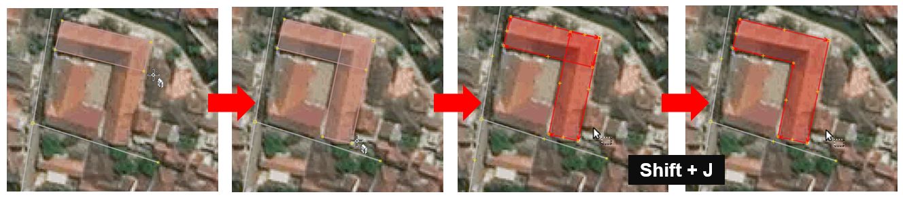

Menggunakan buildings tools di JOSM
Download page as PDFTujuan Pembelajaran:
- Mampu menerapkan cara melakukan instalasi alat tambahan untuk membuat objek bangunan
- Mampu menerapkan cara mengoperasikan alat tambahan di JOSM untuk membuat objek bangunan
Jika Anda menambahkan data di JOSM tanpa melakukan survei lapangan, data yang ditambahkan akan memiliki informasi yang terbatas karena hanya menggunakan citra satelit sebagai acuan pemetaan. Salah satu objek yang dapat dipetakan menggunakan citra satelit adalah bangunan. Namun, Anda tidak dapat mengetahui fungsi spesifik bangunan yang dipetakan menggunakan citra satelit kecuali bentuk bangunannya cukup berbeda misalnya sekolah yang berbentuk seperti huruf L atau huruf U.
Bangunan sekolah berbentuk seperti huruf U
Dengan OSM, Anda dapat memetakan bangunan umum walaupun Anda tidak mengetahui fungsi spesifiknya. Objek bangunan tersebut dapat diberikan preset/tag building=yes untuk menunjukkan bahwa objek tersebut adalah bangunan. Tetapi jika Anda memetakan banyak bangunan, pasti cukup merepotkan juga jika Anda harus menambahkan preset/tag buidling=yes setiap kali Anda menggambarkan satu bangunan. JOSM memiliki plugin (alat tambahan) yang dapat memudahkan Anda menggambar objek bangunan. Alat ini memungkinkan bangunan yang Anda digitasi/gambar otomatis memiliki preset building=yes dan memiliki bentuk bangunan yang relatif lebih rapi. Plugin ini bernama buildings tools.
I. Menginstal buildings tools di plugin JOSM
Untuk dapat menggunakan plugin buildings tools, Anda harus menginstalnya terlebih dahulu. Langkah-langkah untuk menginstal plugin buildings tools adalah sebagai berikut:
- Buka JOSM Anda
- Klik menu Edit → Preferences
- Akan muncul jendela Preferences dan pilih menu Plugins (ikon steker) untuk menginstal plugin baru. Jika daftar plugins belum muncul, Anda dapat mengklik Download List dan pastikan komputer Anda terkoneksi dengan internet untuk dapat men-download plugins tersebut.

Tampilan jendela Preferences untuk menu Plugins
- Pada kotak Search, tuliskan buildings_tools untuk mencari plugin buildings tools. Setelah berhasil menemukan plugin buildings tools, silakan centang kotak kecil di samping plugin buildings tools. Setelah itu klik OK dan tunggu hingga proses instalasi selesai.
Tampilan hasil pencarian plugin buildings_tools
Catatan : Terkadang JOSM meminta Anda untuk melakukan Restart setelah melakukan instalasi plugin baru untuk mengaplikasikan plugin yang baru saja diinstal. Namun, tidak semua plugin membutuhkan Restart untuk dapat digunakan setelah instalasi.
- Jika plugin buildings_tools sudah berhasil diinstal, akan muncul tool Draw buildings di sebelah kiri atas JOSM Anda. Anda dapat menggunakannya untuk menggambar bangunan.

Ikon Draw buildings sudah muncul menandakan plugin buildings tools sudah berhasil terinstal
II. Menggunakan alat buildings tools
Langkah-langkah menggunakan plugin buildings tools adalah sebagai berikut:
- Seperti yang sudah dibahas pada modul Menambahkan Data OSM Menggunakan JOSM untuk menambahkan data OSM menggunakan JOSM, Anda harus men-download data OSM yang sudah ada terlebih dahulu di wilayah pemetaan Anda. Untuk men-download data OSM, klik menu File → Download Data.
- Gambar kotak pemetaan Anda dengan cara klik kiri tahan dan geser hingga membentuk kotak warna merah muda yang meliputi seluruh wilayah pemetaan Anda. Setelah itu klik Download.
- Setelah berhasil men-download data OSM, akan muncul layer baru yang juga akan menjadi layer dimana Anda dapat menambahkan data OSM. Pastikan Anda hanya menambahkan data pada kotak yang tidak diarsir karena kotak yang diarsir sudah bukan wilayah yang Anda download.
- Tambahkan citra satelit sebagai acuan untuk memetakan dengan cara klik menu Imagery → pilih citra satelit yang akan digunakan, misalnya Digital Globe Premium Imagery.
- Sekarang Anda sudah siap untuk menambahkan data OSM. Untuk memetakan bangunan, gunakan buildings tools untuk menggambarnya. Klik plugin buildings tools (ikon Draw buildings) yang terletak di sebelah kiri atas JOSM atau tekan B pada keyboard Anda. Jika kursor mouse Anda sudah berubah menjadi tanda plus dengan ikon bangunan, berarti Anda sudah siap menggambar bangunan menggunakan buildings tools.

Tampilan kursor saat plugin buildings tools diaktifkan
- Setelah itu, gambar bangunannya sesuai dengan bentuk yang terlihat pada citra satelit. Klik kiri satu kali pada salah satu titik pojok bangunan. Geser kursor ke titik pojok bangunan di sebelah titik pojok bangunan yang pertama, kemudian klik kiri satu kali. Terakhir, geser kursor ke titik pojok bangunan di sebelah titik pojok bangunan kedua lalu klik kiri satu kali pada titik tersebut. Untuk lebih jelasnya, lihat gambar di bawah ini:

Proses menggambar bangunan menggunakan plugin buildings tools
- Jika daerah yang Anda petakan terdapat bangunan-bangunan yang ukurannya dan bentuknya hampir sama seperti di kompleks perumahan, Anda dapat mengatur panjang dan lebar bangunan yang digambar dengan cara klik menu Data → Set Building Size lalu isikan lebar bangunan di kolom Buildings width/diameter dan isikan panjang bangunan di kolom Length step (masing-masing dalam satuan meter). Pada jendela Set Building Size, Anda juga dapat mengatur bentuk default bangunan yang digambar. Ada dua pilihan yaitu Rectangle (persegi empat) atau Circle (lingkaran), tetapi karena pada umumnya bangunan berbentuk persegi empat pilih Rectangle. Lalu klik OK.
Tampilan jendela Set Building Size
- Jika ada bangunan berbentuk kompleks atau tidak kotak seperti huruf L atau huruf U, gambar dua atau tiga bangunan tumpang tindih terlebih dahulu hingga membentuk L atau U. Pilih kedua atau ketiga bangunan yang tumpang tindih tersebut, kemudian klik menu Tools → Join Overlapping Areas atau tekan Shift + J pada keyboard untuk menggabungkan bagian yang tumpang tindih. Setelah bangunan tergabung, rapikan bangunan dengan cara pilih bangunan tersebut lalu klik menu Tools → Orthogonalize Shape atau tekan Q pada keyboard.

Proses menggambar bangunan yang berbentuk seperti huruf L
- Setelah objek-objek bangunan terpetakan, jangan lupa upload hasil pemetaan Anda dengan cara klik menu File → Upload Data. Tuliskan hal yang Anda lakukan pada kolom komentar, misalnya menambahkan bangunan serta tuliskan sumber pada kolom sumber misalnya nama citra yang digunakan sebagai acuan dan kemudian klik Upload Changes.
Catatan : Pastikan tidak ada objek yang terpilih saat Anda menggunakan plugin buildings_tools agar kursor dapat digerakkan lebih leluasa saat menggambar bangunan menggunakan plugin buildings_tools.
RINGKASAN
Jika Anda dapat mengikuti dan memperhatikan seluruh tahapan dalam bab ini, maka Anda telah berhasil menerapkan cara melakukan instalasi plugin buildings tools serta memetakan menggunakan plugin buildings tools. Setelah ini, Anda akan mempelajari bagaimana membuat batas-batas administrasi menggunakan JOSM.